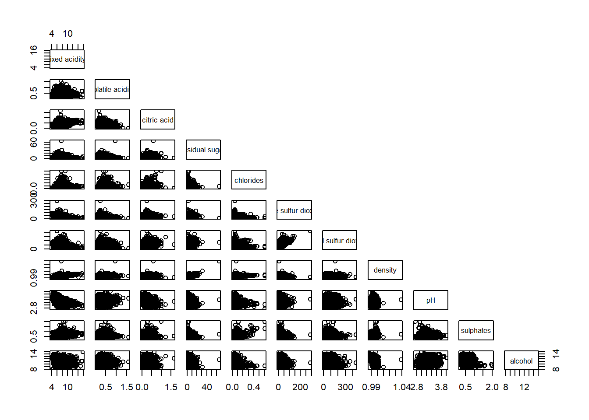
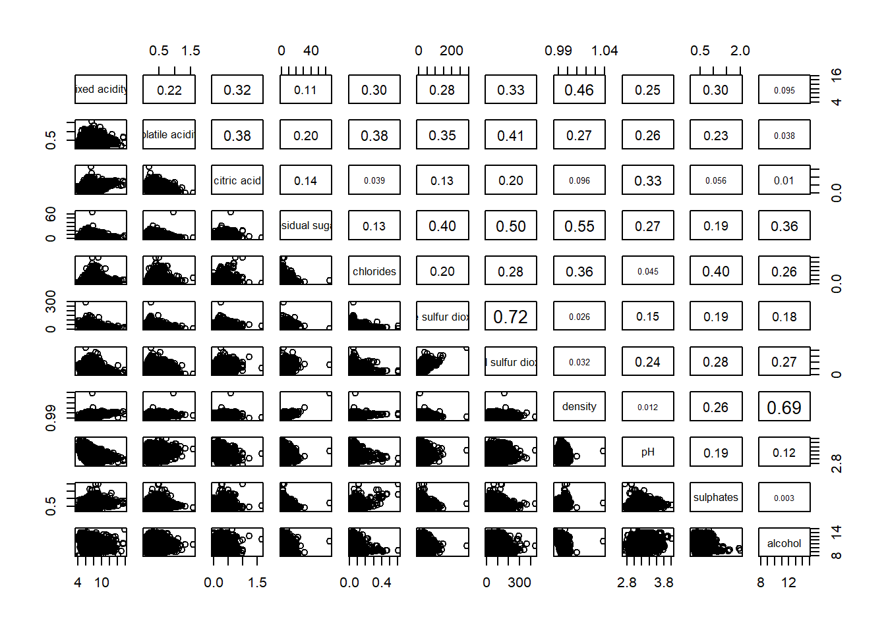
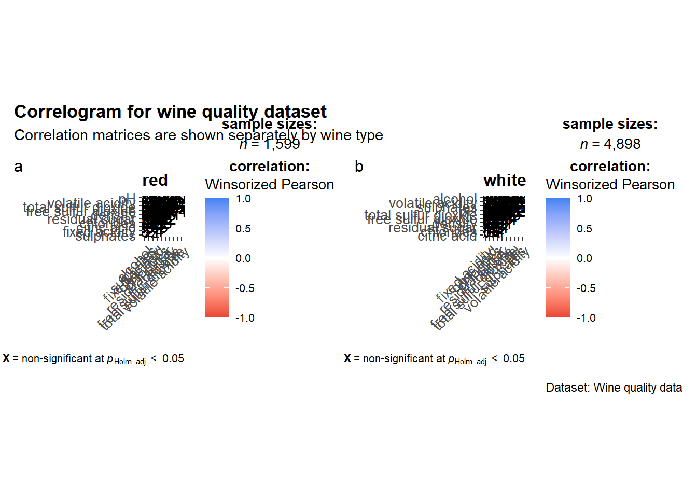

pacman::p_load(corrplot, ggstatsplot, tidyverse)Hands-On Exercise 5
This hands-on exercise will be exploring visual correlation analysis as part of using data to understand relationships between multiple variables. In this exercise, correlation matrices, scatterplot matrices and corrgrams will be used to identify the direction, strength and structure of relationships among variables.
In this exercise, the following R packages will be used:
readr: importing csv into Rcorrplot: creating corrgrams and visualising correlation matricesggstatsplot: creating correlation matrix visualisations with statistical informationtidyverse: R packages for modern data science and visual communication
The code block below checks that the above packages are installed and loaded into the R working environment.
The next code block imports the CSV file for this exercise:
wine <- read_csv("../data/wine_quality.csv") %>%
mutate(type = as.factor(type))Rows: 6497 Columns: 13
── Column specification ────────────────────────────────────────────────────────
Delimiter: ","
chr (1): type
dbl (12): fixed acidity, volatile acidity, citric acid, residual sugar, chlo...
ℹ Use `spec()` to retrieve the full column specification for this data.
ℹ Specify the column types or set `show_col_types = FALSE` to quiet this message.wine_num <- wine %>%
select(where(is.numeric)) %>%
select(-quality)From the code chunk above:
read_csv()is used to import the wine quality data into R.mutate()is used to converttypeinto a factor variable, since it represents wine category.select(where(is.numeric))is used to keep only numerical variables.select(-quality)is used to remove the wine quality score so that the correlation analysis focuses on the physicochemical attributes.
Understanding visual correlation analysis
Correlation analysis is used to measure the direction and strength of the relationship between two variables. The value of a correlation coefficient ranges from -1 to 1.
In general, the interpretation is as follows:
- A value close to 1 suggests a strong positive linear relationship.
- A value close to -1 suggests a strong negative linear relationship.
- A value close to 0 suggests little or no linear relationship.
When there are many numerical variables, it is useful to compute the correlations between each pair of variables. These pairwise relationships can then be shown as a correlation matrix or scatterplot matrix.
There are three main reasons why a correlation matrix is useful:
- It helps to reveal the relationship between many variables pair by pair.
- It can be used as an input into other statistical analyses, such as factor analysis or regression modelling.
- It can be used as a diagnostic tool, especially when checking whether several variables are highly correlated with one another.
In this hands-on exercise, the following methods will be explored:
- creating scatterplot matrices using
pairs() - visualising correlation matrices using
ggcorrmat() - comparing correlation structures by group using
grouped_ggcorrmat() - creating corrgrams using the
corrplotpackage - customising corrgrams by changing geometry, layout, significance testing and ordering
Building correlation matrix using the pairs() method
There is more than one way to build a scatterplot matrix in R. In this section, the base R function pairs() will be used to create scatterplot matrices for the wine quality data.
A scatterplot matrix is useful because it shows the relationship between each pair of numerical variables in one visual output. This gives a quick overview of possible positive, negative or weak relationships.
Building a basic scatterplot matrix
The code chunk below plots a basic scatterplot matrix using the numerical wine attributes.
pairs(wine_num)
Studying both the code chunk and the scatterplot matrix that is generated, there are 2 things to note:
- The input of
pairs()can be either a matrix or data frame. - Each cell in the matrix shows a scatterplot between two numerical variables.
Although this method is simple, the plot can become difficult to read when there are many observations or when many variables are included.
Drawing the lower corner of the scatterplot matrix
A correlation matrix is symmetric. This means that the lower half and upper half of the matrix contain the same pairwise relationships, only in opposite positions.
Therefore, it is common to display only one half of the matrix.
The code chunk below removes the upper panel and displays only the lower half of the scatterplot matrix.
pairs(wine_num,
upper.panel = NULL)
From the code chunk above:
upper.panel = NULLremoves the upper half of the matrix.- This makes the visualisation less crowded.
- The lower half is enough to interpret the pairwise relationships.
Similarly, the code chunk below removes the lower panel and displays only the upper half of the scatterplot matrix.
pairs(wine_num,
lower.panel = NULL)
From the code chunk above:
lower.panel = NULLremoves the lower half of the matrix.- The remaining upper half still contains the same pairwise relationship information.
- This is useful when we want a cleaner version of the full scatterplot matrix.
Including correlation coefficients in the scatterplot matrix
Instead of showing only scatterplots, it is also possible to include correlation coefficients in the scatterplot matrix.
First, the code chunk below creates a helper function called panel.cor().
panel.cor <- function(x, y, digits = 2, prefix = "", cex.cor, ...) {
usr <- par("usr")
on.exit(par(usr))
par(usr = c(0, 1, 0, 1))
r <- abs(cor(x, y, use = "complete.obs"))
txt <- format(c(r, 0.123456789), digits = digits)[1]
txt <- paste(prefix, txt, sep = "")
if(missing(cex.cor)) {
cex.cor <- 0.8 / strwidth(txt)
}
text(0.5, 0.5, txt, cex = cex.cor * (1 + r) / 2)
}The code chunk below uses panel.cor() to place the correlation coefficients in the upper panel.
pairs(wine_num,
upper.panel = panel.cor)Warning in par(usr): argument 1 does not name a graphical parameter
Warning in par(usr): argument 1 does not name a graphical parameter
Warning in par(usr): argument 1 does not name a graphical parameter
Warning in par(usr): argument 1 does not name a graphical parameter
Warning in par(usr): argument 1 does not name a graphical parameter
Warning in par(usr): argument 1 does not name a graphical parameter
Warning in par(usr): argument 1 does not name a graphical parameter
Warning in par(usr): argument 1 does not name a graphical parameter
Warning in par(usr): argument 1 does not name a graphical parameter
Warning in par(usr): argument 1 does not name a graphical parameter
Warning in par(usr): argument 1 does not name a graphical parameter
Warning in par(usr): argument 1 does not name a graphical parameter
Warning in par(usr): argument 1 does not name a graphical parameter
Warning in par(usr): argument 1 does not name a graphical parameter
Warning in par(usr): argument 1 does not name a graphical parameter
Warning in par(usr): argument 1 does not name a graphical parameter
Warning in par(usr): argument 1 does not name a graphical parameter
Warning in par(usr): argument 1 does not name a graphical parameter
Warning in par(usr): argument 1 does not name a graphical parameter
Warning in par(usr): argument 1 does not name a graphical parameter
Warning in par(usr): argument 1 does not name a graphical parameter
Warning in par(usr): argument 1 does not name a graphical parameter
Warning in par(usr): argument 1 does not name a graphical parameter
Warning in par(usr): argument 1 does not name a graphical parameter
Warning in par(usr): argument 1 does not name a graphical parameter
Warning in par(usr): argument 1 does not name a graphical parameter
Warning in par(usr): argument 1 does not name a graphical parameter
Warning in par(usr): argument 1 does not name a graphical parameter
Warning in par(usr): argument 1 does not name a graphical parameter
Warning in par(usr): argument 1 does not name a graphical parameter
Warning in par(usr): argument 1 does not name a graphical parameter
Warning in par(usr): argument 1 does not name a graphical parameter
Warning in par(usr): argument 1 does not name a graphical parameter
Warning in par(usr): argument 1 does not name a graphical parameter
Warning in par(usr): argument 1 does not name a graphical parameter
Warning in par(usr): argument 1 does not name a graphical parameter
Warning in par(usr): argument 1 does not name a graphical parameter
Warning in par(usr): argument 1 does not name a graphical parameter
Warning in par(usr): argument 1 does not name a graphical parameter
Warning in par(usr): argument 1 does not name a graphical parameter
Warning in par(usr): argument 1 does not name a graphical parameter
Warning in par(usr): argument 1 does not name a graphical parameter
Warning in par(usr): argument 1 does not name a graphical parameter
Warning in par(usr): argument 1 does not name a graphical parameter
Warning in par(usr): argument 1 does not name a graphical parameter
Warning in par(usr): argument 1 does not name a graphical parameter
Warning in par(usr): argument 1 does not name a graphical parameter
Warning in par(usr): argument 1 does not name a graphical parameter
Warning in par(usr): argument 1 does not name a graphical parameter
Warning in par(usr): argument 1 does not name a graphical parameter
Warning in par(usr): argument 1 does not name a graphical parameter
Warning in par(usr): argument 1 does not name a graphical parameter
Warning in par(usr): argument 1 does not name a graphical parameter
Warning in par(usr): argument 1 does not name a graphical parameter
Warning in par(usr): argument 1 does not name a graphical parameter
What can we learn from this makeover?
upper.panel = panel.correplaces the scatterplots in the upper panel with correlation coefficients.- Larger values are displayed with larger text size.
- This allows both the scatterplot pattern and numerical strength of the relationship to be shown in one visualisation.
Visualising correlation matrix using ggcorrmat()
One limitation of the scatterplot matrix is that it can become visually cluttered when the dataset contains many observations. In such cases, a corrgram is a more compact way to display the correlation matrix.
In this section, the ggcorrmat() function from the ggstatsplot package will be used to create a correlation matrix visualisation.
Building a basic correlation matrix with ggcorrmat()
The code chunk below creates a basic correlation matrix using ggcorrmat().
ggstatsplot::ggcorrmat(
data = wine_num
)
The following information can be obtained from the correlation matrix:
- correlation direction
- correlation strength
- statistical significance
- overall structure of relationships between variables
Compared with the base R pairs() method, ggcorrmat() presents the correlation matrix in a more polished and statistical format.
Aesthetic makeover for ggcorrmat()
The code chunk below improves the basic correlation matrix by adding aesthetic customisation, hierarchical ordering, title and subtitle.
ggstatsplot::ggcorrmat(
data = wine_num,
ggcorrplot.args = list(
outline.color = "black",
hc.order = TRUE,
tl.cex = 10
),
title = "Correlogram for wine quality dataset",
subtitle = "Correlation matrix of selected wine attributes"
)
What is added into the code chunk above that improves the visuals of the correlation matrix?
outline.color = "black"adds a clear outline around the matrix cells.hc.order = TRUEarranges similar variables closer together through hierarchical clustering.tl.cex = 10adjusts the text size of the variable labels.titleandsubtitleare used to improve the context of the visualisation.
Customising the text size
At times, we may want to adjust the text size of the correlation matrix to improve readability.
The code chunk below shows how this can be done by using ggplot.component.
ggstatsplot::ggcorrmat(
data = wine_num,
ggcorrplot.args = list(
outline.color = "black",
hc.order = TRUE,
tl.cex = 10
),
ggplot.component = list(
theme(
text = element_text(size = 5),
axis.text.x = element_text(size = 8),
axis.text.y = element_text(size = 8)
)
),
title = "Correlogram for wine quality dataset",
subtitle = "Correlation matrix with customised text size"
)
From the code chunk above:
ggplot.componentallows additionalggplot2theme settings to be passed into the plot.text = element_text(size = 5)changes the general text size.axis.text.xandaxis.text.ychange the text size of the axis labels.
Building multiple correlation matrices by wine type
Since ggstatsplot extends ggplot2, it supports more advanced visualisation workflows. However, faceting is not done directly inside ggcorrmat(). Instead, the function grouped_ggcorrmat() is used to create grouped correlation matrix visualisations.
In this section, correlation matrices will be generated separately for each wine type.
The code chunk below creates grouped correlation matrices for red and white wine.
grouped_ggcorrmat(
data = wine %>%
select(all_of(names(wine_num)), type),
cor.vars = 1:ncol(wine_num),
grouping.var = type,
type = "robust",
p.adjust.method = "holm",
plotgrid.args = list(ncol = 2),
ggcorrplot.args = list(
outline.color = "black",
hc.order = TRUE,
tl.cex = 10
),
annotation.args = list(
tag_levels = "a",
title = "Correlogram for wine quality dataset",
subtitle = "Correlation matrices are shown separately by wine type",
caption = "Dataset: Wine quality data"
)
)
Things to learn from the code chunk above:
grouping.var = typeis used to split the correlation matrix by wine type.type = "robust"uses a robust correlation method.p.adjust.method = "holm"adjusts the p-values for multiple comparison.plotgrid.args = list(ncol = 2)arranges the grouped plots into two columns.annotation.argsis used to add title, subtitle, caption and plot tags.
This visualisation is useful because it allows us to compare whether red and white wines have similar or different correlation structures.
Visualising correlation matrix using the corrplot package
The corrplot package provides another way to visualise correlation matrices. It is useful because it offers many layout, geometry and ordering options.
Before plotting the corrgram, the correlation matrix must first be computed.
Computing the correlation matrix
The code chunk below computes the correlation matrix of the numerical wine attributes.
wine_cor <- cor(wine_num,
use = "complete.obs")From the code chunk above:
cor()is used to compute the pairwise correlation coefficients.use = "complete.obs"ensures that only complete observations are used.- The computed correlation matrix is saved as
wine_cor.
Getting started with corrplot()
The code chunk below plots the corrgram using the default settings of corrplot().
corrplot(wine_cor)
From the plot generated:
- The default visual object is a circle.
- The default layout is a full symmetric matrix.
- The default colour scheme uses a diverging colour scale.
- Positive correlations and negative correlations are shown using different colours.
- Stronger correlations are represented by darker and larger symbols.
Working with visual geometrics
The corrplot package supports several visual geometrics through the method argument. Examples include:
"circle""square""ellipse""number""shade""color""pie"
The code chunk below changes the visual geometry from the default circle to ellipse.
corrplot(wine_cor,
method = "ellipse")
What can we learn from this makeover?
method = "ellipse"changes how the correlation values are encoded.- The shape and direction of the ellipse help to show the strength and direction of the correlation.
- Different methods can be used depending on the intended visual emphasis.
Working with layout
The corrplot() function supports three main layout types:
"full""upper""lower"
The default layout is "full", which shows the full correlation matrix. Since the correlation matrix is symmetric, it is often cleaner to show only the upper or lower half.
The code chunk below displays only the lower half of the corrgram.
corrplot(wine_cor,
method = "ellipse",
type = "lower")
The code chunk below improves the layout further by removing the diagonal and changing the text label colour.
corrplot(wine_cor,
method = "ellipse",
type = "lower",
diag = FALSE,
tl.col = "black")
From the code chunk above:
type = "lower"displays only the lower half of the matrix.diag = FALSEremoves the diagonal values.tl.col = "black"changes the text label colour to black.
This makes the corrgram cleaner and easier to interpret.
Working with mixed layout
A mixed layout allows one half of the corrgram to use a visual encoding while the other half uses numerical values.
The code chunk below creates a mixed corrgram.
corrplot.mixed(wine_cor,
lower = "ellipse",
upper = "number",
tl.pos = "lt",
diag = "l",
tl.col = "black")
From the code chunk above:
lower = "ellipse"displays ellipses in the lower half of the matrix.upper = "number"displays numerical correlation values in the upper half.tl.pos = "lt"places the text labels on the left and top.diag = "l"controls the appearance of the diagonal.tl.col = "black"changes the text label colour to black.
This is useful because it combines visual interpretation and numerical precision in one plot.
Combining corrgram with significance testing
In correlation analysis, it is not enough to look only at the size of the correlation coefficient. We may also want to know whether the correlation is statistically significant.
In this section, a helper function is used to compute the p-values and confidence intervals for each pair of variables.
Computing significance values
The code chunk below creates a helper function to compute significance values for each correlation pair.
cor_mtest <- function(mat, conf.level = 0.95) {
mat <- as.matrix(mat)
n <- ncol(mat)
p.mat <- lowCI.mat <- uppCI.mat <- matrix(NA, n, n)
diag(p.mat) <- 0
diag(lowCI.mat) <- diag(uppCI.mat) <- 1
for (i in 1:(n - 1)) {
for (j in (i + 1):n) {
tmp <- cor.test(mat[, i], mat[, j], conf.level = conf.level)
p.mat[i, j] <- p.mat[j, i] <- tmp$p.value
lowCI.mat[i, j] <- lowCI.mat[j, i] <- tmp$conf.int[1]
uppCI.mat[i, j] <- uppCI.mat[j, i] <- tmp$conf.int[2]
}
}
colnames(p.mat) <- rownames(p.mat) <- colnames(mat)
colnames(lowCI.mat) <- rownames(lowCI.mat) <- colnames(mat)
colnames(uppCI.mat) <- rownames(uppCI.mat) <- colnames(mat)
list(p = p.mat,
lowCI = lowCI.mat,
uppCI = uppCI.mat)
}
wine_sig <- cor_mtest(wine_num,
conf.level = .95)From the code chunk above:
cor.test()is used to test the correlation between each pair of variables.- The p-values are stored in
p.mat. - The lower and upper confidence intervals are stored in
lowCI.matanduppCI.mat. - The output is saved as
wine_sig.
Plotting a corrgram with significance test
The code chunk below uses the p-value matrix in the corrgram.
corrplot(wine_cor,
method = "number",
type = "lower",
diag = FALSE,
tl.col = "black",
tl.srt = 45,
p.mat = wine_sig$p,
sig.level = .05)
From the code chunk above:
p.mat = wine_sig$psupplies the p-value matrix tocorrplot().sig.level = .05sets the significance level at 5%.method = "number"displays the correlation coefficients directly.tl.srt = 45rotates the text labels for readability.
This plot helps us to identify which correlation pairs are statistically significant and which ones should be interpreted more cautiously.
Reordering a corrgram
Reordering a corrgram is useful because it helps to reveal hidden patterns within the correlation matrix. Instead of keeping the original variable order, similar variables can be placed closer together.
The corrplot package supports several ordering methods:
"AOE": angular order of eigenvectors"FPC": first principal component order"hclust": hierarchical clustering order"alphabet": alphabetical order
Reordering by angular order of eigenvectors
The code chunk below reorders the mixed corrgram using the "AOE" method.
corrplot.mixed(wine_cor,
lower = "ellipse",
upper = "number",
tl.pos = "lt",
diag = "l",
order = "AOE",
tl.col = "black")
What can we learn from this makeover?
order = "AOE"changes the variable ordering using angular order of eigenvectors.- Variables with similar correlation patterns are placed closer together.
- This makes the corrgram easier to read when looking for clusters of related variables.
Reordering using hierarchical clustering
The code chunk below reorders the corrgram using hierarchical clustering and draws rectangles around the clusters.
corrplot(wine_cor,
method = "ellipse",
tl.pos = "lt",
tl.col = "black",
order = "hclust",
hclust.method = "ward.D",
addrect = 3)
From the code chunk above:
order = "hclust"arranges the variables based on hierarchical clustering.hclust.method = "ward.D"specifies the clustering method.addrect = 3draws rectangles around three clusters.
This is useful when we want to identify groups of variables that behave similarly in terms of their correlation patterns.
Summary of visual correlation analysis methods
In this hands-on exercise, several methods of visual correlation analysis have been explored.
The pairs() method provides a simple way to build scatterplot matrices and inspect pairwise relationships directly. However, it can become crowded when there are many observations or many variables.
The ggcorrmat() method provides a cleaner and more statistical visualisation of the correlation matrix. It is useful when the goal is to present the correlation structure in a polished format with statistical information.
The grouped_ggcorrmat() method allows the correlation matrix to be compared across groups. In this exercise, it was used to compare correlation structures between wine types.
The corrplot package provides the most flexible corrgram customisation. It supports different geometries, layouts, mixed displays, significance testing and variable reordering.
Overall, visual correlation analysis is useful because it helps us understand how variables are related to one another before moving into more advanced modelling or statistical analysis.